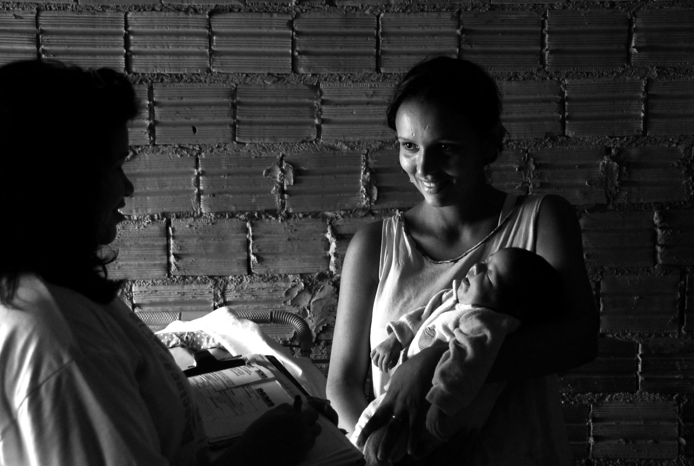

A gente olha a sua cidade inteira antes de propor qualquer coisa.
Do mesmo jeito que um psicólogo olha uma pessoa: escutando primeiro, entendendo como as partes se ligam, e só então dizendo por onde começar. A leitura vem antes da proposta.
Foto: Radilson Carlos Gomes, fotógrafo do SUS.
Duas situações diferentes pedem começos diferentes.
Contratar a PAAPS começa com uma leitura da sua rede. O que essa leitura encontra é o que define por onde a gente entra. São dois caminhos, e eles podem se somar depois.
Cuidado
Quando a equipe está adoecida e em sofrimento. Primeiro se interrompe o que está machucando as pessoas.
Ver o CuidadoIntegração de Rede
Quando a equipe é madura, mas os serviços não conversam entre si, e quem sente isso é o cidadão.
Ver a Integração
Cuidado
Imagine que a gente chega para a primeira conversa com a sua equipe e encontra gente adoecida. Imagine que há choro. Imagine que há desespero. Imagine que há desesperança dentro da equipe que deveria cuidar do cidadão.
O que a PAAPS faz aqui é simples de dizer: a PAAPS cuida.
Foto: Radilson Carlos Gomes, fotógrafo do SUS.
Três coisas concretas.
Psicoterapia online
Acompanhamento semanal com psicóloga da PAAPS, para as pessoas da equipe contempladas no contrato. Online, para caber na rotina de quem trabalha o dia inteiro.
Plantão psicológico nas unidades
No próprio ambiente de trabalho, com privacidade, ética e regulamentação, ativo em pelo menos um dia por semana, com revezamento entre os serviços do município.
Grupos de apoio à equipe
Grupos humanos, conduzidos presencialmente por psicóloga especializada, onde a equipe elabora junto o que vive e aprende a se cuidar. É o que reata uma equipe isolada.

Integração de Rede
Imagine uma rede que deveria trabalhar junta e não se comunica. Que deveria se apoiar e não se apoia. Onde o encaminhamento trava. E quem sente isso é o cidadão.
Você sabe que isso acontece. A gente também sabe. E o problema não é uma pessoa.
Foto: Radilson Carlos Gomes, fotógrafo do SUS.
O problema é uma cultura.
Ninguém acorda querendo travar um encaminhamento. O que existe é uma forma de trabalhar que foi se acomodando ao longo dos anos, em serviços que raramente se sentam na mesma mesa. Isso não se resolve com uma circular nem com troca de pessoas.
A gente escuta cada serviço, faz as equipes compartilharem o que sabem e constrói acordos entre elas. Depois cuida para que esses acordos continuem valendo.
O que fica com o município
- Acordos escritos entre os serviços
- Fluxos desenhados junto com quem executa
- A manutenção desses fluxos ao longo do tempo
- A manutenção das relações entre as equipes
- Pessoas escolhidas dentro de cada equipe como representantes de comunicação nos momentos-chave
- Realinhamento dos fluxos quando a realidade muda
- Discussão de casos em ambiente seguro e respeitoso, com acordos e mediada por especialistas da PAAPS

Comece contando o que está acontecendo.
O cadastro pergunta o tamanho da sua equipe e qual dos dois caminhos parece o seu. Pode ser os dois. A partir dali a gente monta a leitura da sua rede.
Preencher o cadastroRefazenda Rio Xopotó, Desterro do Melo (MG), 2024.